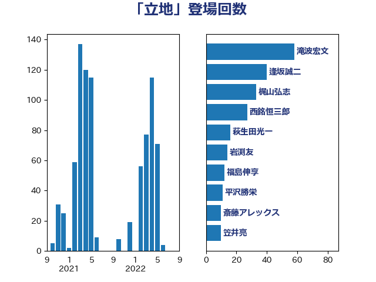

単語「立地」

| 滝波宏文 | 自由民主党 | 58 回 |
| 逢坂誠二 | 立憲民主党 | 40 回 |
| 梶山弘志 | 自由民主党 | 33 回 |
| 西銘恒三郎 | 自由民主党 | 27 回 |
| 萩生田光一 | 自由民主党 | 16 回 |
| 岩渕友 | 日本共産党 | 14 回 |
| 福島伸享 | 無所属 | 12 回 |
| 平沢勝栄 | 自由民主党 | 11 回 |
| 斎藤アレックス | 国民民主党 | 10 回 |
| 笠井亮 | 日本共産党 | 10 回 |
| 岸田文雄 | 自由民主党 | 9 回 |
| 阿部知子 | 立憲民主党 | 9 回 |
| 小泉進次郎 | 自由民主党 | 8 回 |
| 川田龍平 | 立憲民主党 | 8 回 |
| 斉藤鉄夫 | 公明党 | 8 回 |
| 西田昭二 | 自由民主党 | 8 回 |
| 重徳和彦 | 立憲民主党 | 8 回 |
| 金子恵美 | 立憲民主党 | 8 回 |
| 西岡秀子 | 国民民主党 | 7 回 |
| 中西祐介 | 自由民主党 | 6 回 |
| 井上信治 | 自由民主党 | 6 回 |
| 柴田巧 | 日本維新の会 | 6 回 |
| 横山信一 | 公明党 | 6 回 |
| 高橋千鶴子 | 日本共産党 | 6 回 |
| 大岡敏孝 | 自由民主党 | 5 回 |
| 大島敦 | 立憲民主党 | 5 回 |
| 小沼巧 | 立憲民主党 | 5 回 |
| 山添拓 | 日本共産党 | 5 回 |
| 泉田裕彦 | 自由民主党 | 5 回 |
| 田村まみ | 国民民主党 | 5 回 |
| 徳永エリ | 立憲民主党 | 4 回 |
| 江島潔 | 自由民主党 | 4 回 |
| 浜口誠 | 国民民主党 | 4 回 |
| 田村貴昭 | 日本共産党 | 4 回 |
| 菅義偉 | 自由民主党 | 4 回 |
| 坂本哲志 | 自由民主党 | 3 回 |
| 宮沢洋一 | 自由民主党 | 3 回 |
| 小林鷹之 | 自由民主党 | 3 回 |
| 川合孝典 | 国民民主党 | 3 回 |
| 庄子賢一 | 公明党 | 3 回 |
| 西村康稔 | 自由民主党 | 3 回 |
| 野上浩太郎 | 自由民主党 | 3 回 |
| 野田聖子 | 自由民主党 | 3 回 |
| 野間健 | 立憲民主党 | 3 回 |
| 中野洋昌 | 公明党 | 2 回 |
| 中野英幸 | 自由民主党 | 2 回 |
| 井林辰憲 | 自由民主党 | 2 回 |
| 伊東良孝 | 自由民主党 | 2 回 |
| 伊波洋一 | 無所属 | 2 回 |
| 大口善徳 | 公明党 | 2 回 |
| 室井邦彦 | 日本維新の会 | 2 回 |
| 小野泰輔 | 日本維新の会 | 2 回 |
| 山下芳生 | 日本共産党 | 2 回 |
| 山下貴司 | 自由民主党 | 2 回 |
| 山田太郎 | 自由民主党 | 2 回 |
| 山谷えり子 | 自由民主党 | 2 回 |
| 後藤茂之 | 自由民主党 | 2 回 |
| 柳ヶ瀬裕文 | 日本維新の会 | 2 回 |
| 森屋隆 | 立憲民主党 | 2 回 |
| 河野義博 | 公明党 | 2 回 |
| 津島淳 | 自由民主党 | 2 回 |
| 浅野哲 | 国民民主党 | 2 回 |
| 清水貴之 | 日本維新の会 | 2 回 |
| 片山さつき | 自由民主党 | 2 回 |
| 玉木雄一郎 | 国民民主党 | 2 回 |
| 田村智子 | 日本共産党 | 2 回 |
| 石井啓一 | 公明党 | 2 回 |
| 石原正敬 | 自由民主党 | 2 回 |
| 福山哲郎 | 立憲民主党 | 2 回 |
| 福重隆浩 | 公明党 | 2 回 |
| 美延映夫 | 日本維新の会 | 2 回 |
| 荒井優 | 立憲民主党 | 2 回 |
| 谷田川元 | 立憲民主党 | 2 回 |
| 赤羽一嘉 | 公明党 | 2 回 |
| 足立康史 | 日本維新の会 | 2 回 |
| 長坂康正 | 自由民主党 | 2 回 |
| あかま二郎 | 自由民主党 | 1 回 |
| おおつき紅葉 | 立憲民主党 | 1 回 |
| 三木亨 | 自由民主党 | 1 回 |
| 下野六太 | 公明党 | 1 回 |
| 世耕弘成 | 自由民主党 | 1 回 |
| 中島克仁 | 立憲民主党 | 1 回 |
| 亀岡偉民 | 自由民主党 | 1 回 |
| 伊藤俊輔 | 立憲民主党 | 1 回 |
| 古川元久 | 国民民主党 | 1 回 |
| 古賀篤 | 自由民主党 | 1 回 |
| 吉田宣弘 | 公明党 | 1 回 |
| 吉田忠智 | 立憲民主党 | 1 回 |
| 土屋品子 | 自由民主党 | 1 回 |
| 堀内詔子 | 自由民主党 | 1 回 |
| 堀場幸子 | 日本維新の会 | 1 回 |
| 塩川鉄也 | 日本共産党 | 1 回 |
| 塩村あやか | 立憲民主党 | 1 回 |
| 大家敏志 | 自由民主党 | 1 回 |
| 大野泰正 | 自由民主党 | 1 回 |
| 宗清皇一 | 自由民主党 | 1 回 |
| 宮本周司 | 自由民主党 | 1 回 |
| 小宮山泰子 | 立憲民主党 | 1 回 |
| 小沢雅仁 | 立憲民主党 | 1 回 |
| 山口壯 | 自由民主党 | 1 回 |
| 山口那津男 | 公明党 | 1 回 |
| 山岡達丸 | 立憲民主党 | 1 回 |
| 山崎誠 | 立憲民主党 | 1 回 |
| 山際大志郎 | 自由民主党 | 1 回 |
| 岡本あき子 | 立憲民主党 | 1 回 |
| 岡本三成 | 公明党 | 1 回 |
| 岩田和親 | 自由民主党 | 1 回 |
| 岸真紀子 | 立憲民主党 | 1 回 |
| 工藤彰三 | 自由民主党 | 1 回 |
| 市村浩一郎 | 日本維新の会 | 1 回 |
| 平口洋 | 自由民主党 | 1 回 |
| 平将明 | 自由民主党 | 1 回 |
| 新妻秀規 | 公明党 | 1 回 |
| 朝日健太郎 | 自由民主党 | 1 回 |
| 木村次郎 | 自由民主党 | 1 回 |
| 本田顕子 | 自由民主党 | 1 回 |
| 杉田水脈 | 自由民主党 | 1 回 |
| 梅村みずほ | 日本維新の会 | 1 回 |
| 池田佳隆 | 自由民主党 | 1 回 |
| 浜田聡 | NHK党 | 1 回 |
| 深澤陽一 | 自由民主党 | 1 回 |
| 清水真人 | 自由民主党 | 1 回 |
| 渡辺猛之 | 自由民主党 | 1 回 |
| 源馬謙太郎 | 立憲民主党 | 1 回 |
| 熊谷裕人 | 立憲民主党 | 1 回 |
| 玄葉光一郎 | 立憲民主党 | 1 回 |
| 田嶋要 | 立憲民主党 | 1 回 |
| 盛山正仁 | 自由民主党 | 1 回 |
| 石川香織 | 立憲民主党 | 1 回 |
| 神田潤一 | 自由民主党 | 1 回 |
| 空本誠喜 | 日本維新の会 | 1 回 |
| 細田健一 | 自由民主党 | 1 回 |
| 緒方林太郎 | 無所属 | 1 回 |
| 茂木敏充 | 自由民主党 | 1 回 |
| 菅直人 | 立憲民主党 | 1 回 |
| 落合貴之 | 立憲民主党 | 1 回 |
| 藤木眞也 | 自由民主党 | 1 回 |
| 道下大樹 | 立憲民主党 | 1 回 |
| 金子恭之 | 自由民主党 | 1 回 |
| 鈴木俊一 | 自由民主党 | 1 回 |
| 鈴木憲和 | 自由民主党 | 1 回 |
| 鎌田さゆり | 立憲民主党 | 1 回 |
| 長友慎治 | 国民民主党 | 1 回 |
| 阿達雅志 | 自由民主党 | 1 回 |
| 青木愛 | 立憲民主党 | 1 回 |
| 額賀福志郎 | 自由民主党 | 1 回 |
| 高市早苗 | 自由民主党 | 1 回 |
| 高木啓 | 自由民主党 | 1 回 |
| 高橋はるみ | 自由民主党 | 1 回 |